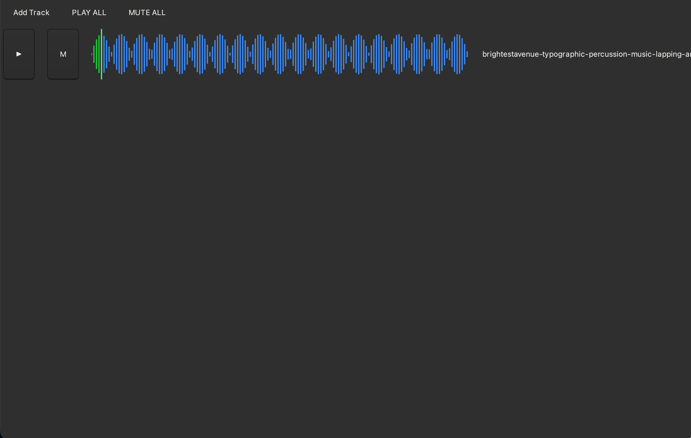
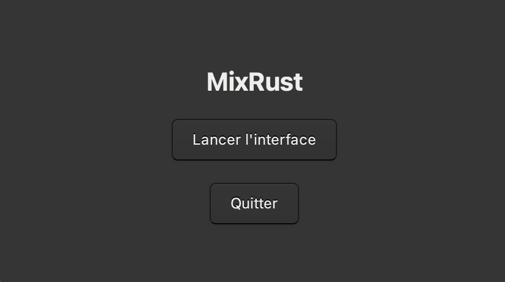
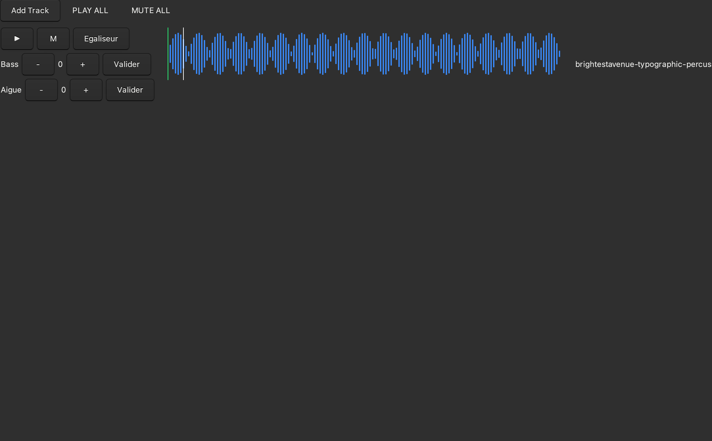
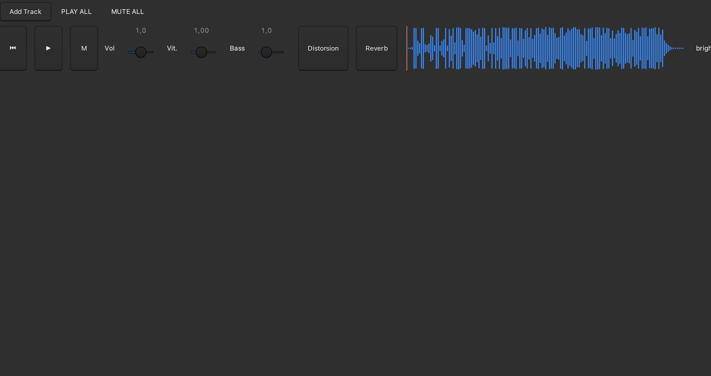
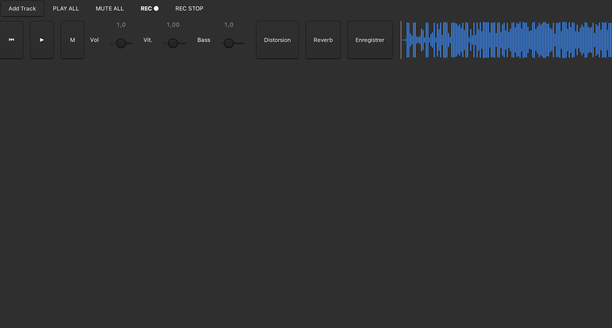
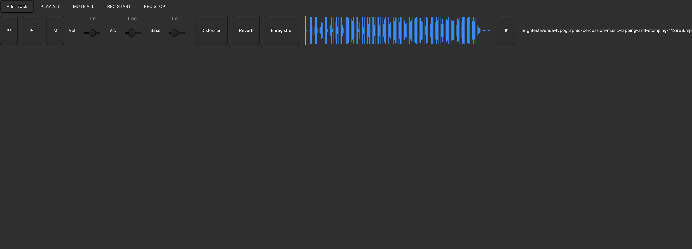

Évolution du projet
Première version fonctionnelle

Mise en place de la lecture audio avec Rust et création de l’interface GTK. Cette version permet de lire des fichiers audio.
Création d interface Accueil

Création d une interface d accueil.
Ajout du système de gestion des bass et aigus

Implémentation de la modification des basses et des aigus.
Refonte du système de gestion des bass et aigus

Implémentation de la modification des basses et des aigus en temps réel. Implémentation de l affichage correct des musiques en cours de lecture.
Ajout du système d enregistrement de la piste audio
ajout d un systeme d enregistrement de la piste audio. ajout d un systeme d enregistrement global des pistes audio.
Optimisation du système d enregistrement

ajout d un image d enregistrement durant le processus d enregistrement de la piste audio. plus arret de l enregistrement de la piste audio apres avoir clique sur le boouton.
Ajout supression d'une piste audio

Ajout de la posibilité de supprimer une piste audio enregistrée.